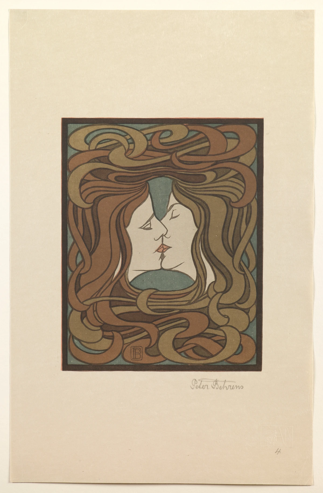

髪が、画面をつなぐ線になる。
左右の髪は顔のまわりを流れ、上と下でからみ合っています。髪を一本ずつ描くのではなく、曲がる帯のようにまとめています。
作品・制作の例3件を紹介しています。実作品画像1点、参照・関連画像0点。画像の収集は継続中です。
Art Nouveauの地域的な呼称・展開（独立した別運動として数えない）
Jugendstil
ユーゲントシュティールは、アール・ヌーヴォーのドイツでの呼び名です。
名前のもとになったのは、1896年に始まった雑誌『ユーゲント』。
新しい形を、絵や印刷物だけでなく、建物や暮らしの道具にも広げようとしました。
別の流行がもう一つ生まれた、と数えるのではなく、地域ごとのつながりを見てみましょう。
実作品を見る

画像を表示できませんでした。下の出典ページで確認できます。
ペーター・ベーレンス / 1898年
セントルイス美術館所蔵360:1991。多色木版。館記載寸法26.7×21.6cm。掲載画像は紙の余白を含みます。既存参照のネルソン＝アトキンス美術館F86-16とは別の所蔵個体です。
左右の髪は顔のまわりを流れ、上と下でからみ合っています。髪を一本ずつ描くのではなく、曲がる帯のようにまとめています。
二人の明るい横顔を、濃い輪郭線が区切ります。茶色や黄土色の髪と緑の背景は、大きな色の面として並んでいます。
紙の余白を含む全体を掲載しています。絵の下には鉛筆の署名が見えます。図柄だけでなく、紙に刷られた一枚として見てみましょう。
Peter Behrens, The Kiss, 1898. Saint Louis Art Museum, Museum Shop Fund, 360:1991. Public Domain.
出典で作品・資料を見る ↗Public Domain（所蔵館の個別指定。CC0とは異なります）
原作品は1898年の多色木版。作者は1940年没。所蔵館はこの作品をPublic Domainと表示しています。
所蔵館のTerms of Use Bは、Public-domain Contentのダウンロードと利用を制限なく認めています。一般の館コンテンツの非商用条件とは区別します。
美術館の推奨や関与を示す掲載ではありません。出典リンクは美術館の外部サイトを開きます。
原JPEGのバイトを保持。表示用WebPだけ等比縮小。切り抜き、色補正、描き足しはしていません。
米国の1898年公表作品としての期間と、作者の没後年を確認。各国の権利・著作者人格権まで一括して保証するものではありません。
出典先の原画像を開く ↗作品の所蔵・権利情報 ↗画像の利用条件 ↗表示用画像は縦横比を保って縮小したWebP。原JPEGは無加工で保持しています。
版画
からみ合う髪を曲線の模様として表し、人物の輪郭と平面性を一緒に見られる例。
作品・資料の出典を見る ↗作品名（出典表記）：The Kiss（接吻）
Peter Behrens（ペーター・ベーレンス） / 1898 / 版画
ポスター
ベルギーの作家がドイツ企業の広告をつくった例です。曲線を使う新しい表現が、国境をこえて広がったことがわかります。
作品・資料の出典を見る ↗作品名（出典表記）：Poster advertising Tropon
Henri van de Velde（アンリ・ヴァン・デ・ヴェルデ） / 1898 / ポスター
建築
芸術家が使う建物にも、新しい形が広がった例です。版画と建築を比べると、活動の幅が見えてきます。
作品・資料の出典を見る ↗作品名（出典表記）：Ernst Ludwig-Haus
Joseph Maria Olbrich（ヨーゼフ・マリア・オルブリヒ）（建築） / 1901 / 建築
名前は、ミュンヘンで1896年に創刊された雑誌『ユーゲント』に由来します。
雑誌は新しい表現を紹介する場で、展示会や工房も活動を支えました。
一方、ダルムシュタットでは1899年に芸術家村がつくられ、1901年の展覧会で建築や工芸が紹介されました。
雑誌、芸術家村、個々の建物の年は、それぞれ別に覚えます。
決まった色の組み合わせはありません。印刷の色と、建物や工芸の材料の色を分けて見ます。
共通の書体一つで判断せず、作品名や文字と図が置かれた場所を確かめます。
《接吻》では、からみ合う髪が曲線の模様になります。人物を細かく写すより、輪郭と平たい形が強く感じられる例です。
一つの模様だけで判定せず、画面全体や建物全体で形がどう組み合わされるかを見ます。これは観察の手順であり、全作品共通の規則ではありません。
アール・ヌーヴォーは国境をこえた広い呼び名、ユーゲントシュティールはここで扱うドイツでの展開です。
ウィーン分離派は、作品を展示・発表した芸術家の団体。
人や表現のつながりはあっても、この三つを同じ種類の名前として並べたり、互いに無関係な流行として数えたりしません。
本の表紙や包装を見て、文字と絵の曲線がつながっている場所を探してみましょう。飾りが読みやすさや印象をどう変えるかを比べます。
ドイツでの版画・建築に、国をまたぐ広告の比較例を加えました。地域全体の工芸や出版の多様さを、この3件だけで網羅するものではありません。
作品・制作の例3件を紹介しています。実作品画像1点、参照・関連画像0点。画像の収集は継続中です。